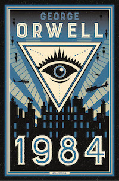

Navigation |
George Orwell 1984 |
||
|  | |||
|
It was a bright, cold day in April and the clocks were striking thirteen. Winston Smith hurried home to Victory Mansions with his head down to escape the terrible wind. A cloud of dust blew inside with him, and the hall smelled of dust and yesterday's food. At the end of the hall, a poster covered one wall. It showed an enormous face, more than a metre wide: the face of a handsome man of about forty-five, with a large, black moustache. The man's eyes seemed to follow Winston as he moved. Below the face were the words BIG BROTHER IS WATCHING YOU. |
|||